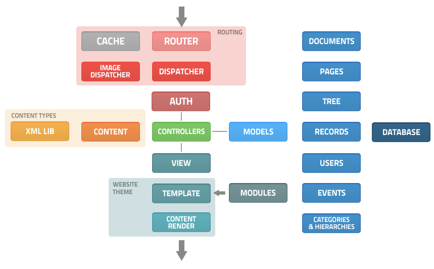

v0.9.5 - Official User Guide
Architecture¶
Bancha uses the Model-View-Controller approach, which allows great separation between logic and presentation.
We extended the base CodeIgniter structure into a new, better one.
First of all, there’s a routing system that calls a front-controller. This, loads a specific dispatcher depending on the request, and starts the loaded dispatcher.
Tipically, many models such as the records and the pages are already loaded into the base system so they don’t need to be loaded before use.
The dispatcher, using models and libraries prepares all the data that the view will need, and finally loads the view.
The view checks the current theme and using it loads the theme layout. Next, the theme layout renders the page base layout (head, wrapper, etc...) and the chosen view template. The view template, finally compiles the view using the content render (described in the next chapters).